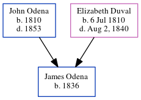

James Henry Odena 1836 -
[ Home ] | [ Calendar ] | [ Surnames Index ] | [ Census Index ] | [ Family History ]The child of John Odena and Elizabeth Duval, James Odena, the three times great-uncle of Michele Copp (née Phillips), was born in South Carolina in 18361. In 1850, he was living in St Michael and St Phillip, Charleston, South Carolina1.
Parents
- John Hypolite was born in 1810
- Elizabeth was born on Jul 6, 1810
Citations
- 1850 United States Federal Census Online publication - Provo, UT, USA: The Generations Network, Inc., 2005.Original data - United States of America, Bureau of the Census. Seventh Census of the United States, 1850. Washington, D.C.: National Archives and Records Administration, 1850. M432,
Family Tree
Generated by ged2site. Last updated on Jun 6, 2024